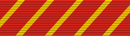

Air Force Combat Action Medal
DecorationAFCAM
For Airmen who actively participated in ground or air combat.
Check your eligibility and build your ribbon rackHow you get it
A decoration must be officially awarded. Meeting the standard isn't enough: someone has to recommend you and the approval authority has to sign off. The citation and special order are your proof.
Approval: Approved by the Commander, Air Force Forces (COMAFFOR).
It belongs on your record if
- You received it: a citation and special order were issued to you, or it's on your DD-214 or personnel record
- It was approved, but it's missing from your DD-214 or personnel record
What it's awarded for
- Came under direct and hostile fire while operating outside the defended perimeter, at risk of grave danger
- Physically engaged hostile forces with direct and lethal fire
- Came under fire and engaged the enemy while defending the base on the defended perimeter
- Earned the Combat Infantryman Badge, Combat Action Badge, Combat Medical Badge, or Combat Action Ribbon while with another service (may apply to the COMAFFOR for consideration)
Quick facts
- Category
- Personal decorations
- Type
- Decoration
- Authorized devices
- Gold Star
- WAPS points
- 0
- Position in the AFPC listing
- 20 of 91 (listed in order of precedence)
Full AFPC fact sheet text
Background
On March 15, 2007, the Secretary of the Air Force approved the establishment of the Air Force Combat Action Medal to recognize any military member of the Air Force (airman basic through colonel), who actively participated in either air or ground combat.
Criteria
The principle eligibility criterion is that the individual must have been under direct and hostile fire while operating in unsecured space (defined as outside the defended perimeter), or physically engaging hostile forces with direct and lethal fire.
The Commander, Air Force Forces (COMAFFOR) is the award authority for the AFCAM. The award criteria for the AFCAM are similar to that of other U.S. services, but are more specific with regard to combat conditions criteria. Personnel who earned the Combat Infantryman Badge, Combat Action Badge, Combat Medical Badge, or Combat Action Ribbon while assigned with the Army, Navy, or Marine Corps may submit a copy of that award, along with other documentation required in this message, to the COMAFFOR for consideration for award of the AFCAM. The AFCAM may be awarded to members from the other U.S. armed forces and foreign military members serving in a U.S. Air Force unit, provided they meet the award criteria.
Combat Conditions Defined: For purposes of this award, the combat conditions are met when:
-Individual(s) deliberately go outside the defended perimeter to conduct official duties, either ground or air, and
-Come under enemy attack by lethal weapons while performing those duties, and
-Are at risk of grave danger
Or:
-Individual(s) are defending the base (on the defended perimeter), and
-Come under fire and engage the enemy with direct and lethal fire, and
-Are at risk of grave danger, and also meet the intent of the combat conditions for this award.
Additionally, personnel in ground operations who actively engage the enemy with direct and lethal fire may qualify even if no direct fire is taken, as long as there was risk of grave danger and other criteria are met. Central to the integrity of this combat recognition is the adherence to these combat conditions prerequisites.
Criteria - Ground:
Individual(s) must be in combat conditions as defined above. Combat must take place in a combat zone defined as a geographic area designated by the President via Executive Order, or a qualified hazardous duty area in which a member is receiving Imminent Danger Pay or Hostile Fire Pay (IDP/HFP). Individual must be physically present, at risk of grave danger, and performing in accordance with the prescribed rules of engagement.
Personnel outside the defended perimeter must be fired upon by the enemy with lethal weapons; returning fire is situation dependent and not necessarily a precondition of award. Risk of grave danger to the individual must be detailed in the award submission.
Encampments, compounds, and protected areas inside the defended perimeter will normally not qualify as venues for this award unless the individual is serving in a defensive capacity, taking fire, and engaging the enemy. Augmenting a defensive fighting position and taking fire, regardless of official duties, would also qualify as combat action if all other criteria were met. Receiving mortars, responding to alarm conditions, reporting to bunkers, etc., do not independently constitute combat action for the purpose of this award. However, should combat conditions arise out of such events, then exceptions to policy with full justification can be submitted.
Personnel eligible for the award of the Purple Heart do not automatically qualify for the AFCAM. Purple Heart recipients must apply for the AFCAM through the appropriate award channels.
Criteria - Air:
Individual(s) must be flying as authorized aircrew members on aeronautical orders in direct support of a combat zone and in combat as defined in the above combat conditions. Combat must take place in a combat zone defined as a geographic area designated by the president via Executive Order, or a qualified hazardous duty area in which a member is receiving Imminent Danger Pay or Hostile Fire Pay (IDP/HFP). Individual(s) must be physically present, at risk of grave danger, and performing satisfactorily in accordance with the prescribed rules of engagement.
Individual must be performing assigned duties. Passengers traveling, including aircrew manifested as passengers, on an aircraft which comes under enemy fire, are not eligible based solely on their presence on the aircraft.
The AFCAM may be awarded for qualifying service from Sept. 11, 2001 to a date to be determined. Retroactive awards prior to Sept. 11, 2001 are not authorized.
There is no minimum time-in-theater requirement to qualify for the AFCAM. Only one AFCAM may be awarded during a qualifying period. Subsequent qualifying periods will be determined by the Secretary of the Air Force (SECAF). Only one award per operation is authorized. Operations IRAQI FREEDOM and ENDURING FREEDOM are considered one operation. Subsequent operations will be approved by the Chief of Staff of the Air Force and will be indicated by the use of the Gold Star on the ribbon and medal.
Requests for exceptions to policy established here or in future instructions must be justified and forwarded through command channels. The requesting member's home station will route requests through MAJCOM/CC to the COMAFFOR to AF/CV. AF/CV has been designated decisional authority by SECAF for all AFCAM Exception to Policy requests. In-theater requests for exception will route through COMAFFOR to AF/CV.
Medal description
The medal is designed to evoke Air Force heritage, scarlet with diagonal yellow stripes - adapted from the art insignia on the aircraft of Gen. Billy Mitchell, who coordinated the first air-to-ground offensive in history. Further, the AFCAM features an eagle grasping arrows in one talon and an olive branch in the other, the arrows reflecting preparedness for war while the olive branch represents a goal of peace.
Authorized devices
Gold Star
Source: Air Force Combat Action Medal fact sheet, Air Force's Personnel Center